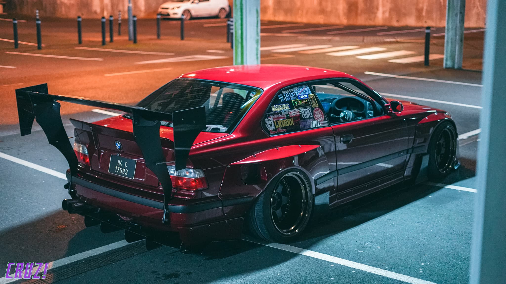

Slick's E36: Functional Aggression
In the world of automotive enthusiasm, there exists a delicate balance between form and function. Some builds lean heavily toward show-stopping aesthetics, while others prioritize performance at the expense of visual appeal. But occasionally, a car emerges that masterfully blends both worlds—a vehicle that turns heads not just for its aggressive appearance, but because every visual element serves a purpose. Slick's BMW E36 is precisely such a creation.
This burgundy beast, adorned with a massive rear wing and widened fenders, isn't just built to look menacing in parking lots. It's a purpose-built machine that regularly carves corners at track days while maintaining enough civility to be driven on public roads. The owner, known as "Slick" in the Irish car scene, has spent years refining this E36 into what you see today—a perfect embodiment of functional aggression.
The Evolution of a Vision
What started as a relatively stock E36 325i has evolved through multiple iterations over the years. Slick purchased the car back in 2018, initially drawn to the platform for its balance, tunability, and the availability of parts. The first year was spent addressing maintenance issues and making minor modifications, but the vision was always clear: create a dual-purpose vehicle that could dominate track days while remaining streetable.
The transformation began in earnest during the winter of 2019, when the car was stripped down to begin its metamorphosis. The first major upgrades focused on suspension and handling, with a full coilover setup, reinforced subframes, and upgraded bushings throughout. Power mods were kept relatively modest at this stage, with the focus being on creating a balanced package.
The Build Process

Aerodynamics: Form Following Function
The most striking aspect of this build is undoubtedly its aerodynamic package. The massive GT-style rear wing isn't just for show—it's carefully positioned to provide maximum downforce at track speeds. The front splitter and side skirts work in harmony with the wing to create a balanced aero package that keeps the car planted through high-speed corners.
The widened fenders aren't merely aesthetic either; they accommodate the wider track and larger wheels necessary for improved grip. Every vent, scoop, and contour on this car serves a purpose, whether it's cooling, airflow management, or downforce generation.
Power and Performance
While the exterior modifications might steal the spotlight, what's under the hood is equally impressive. The original M50 engine has been rebuilt with forged internals, allowing it to handle significantly more power reliably. A custom turbo setup pushes the output to approximately 450 horsepower—more than enough to make this E36 a force to be reckoned with on both street and track.
The power is managed through a reinforced drivetrain, featuring a strengthened transmission, upgraded clutch, and limited-slip differential. The braking system has been completely overhauled with larger calipers, slotted rotors, and high-temperature pads to ensure the car stops as well as it goes.
Build Specifications
The Driver's Environment
Inside, the car strikes a balance between race car functionality and street car comfort. A half cage provides additional rigidity and safety, while racing seats and harnesses keep the driver firmly in place during aggressive driving. The dashboard remains largely intact, though supplemented with additional gauges to monitor vital engine parameters.
The rear seats have been removed to save weight, replaced with a clean panel that houses fire suppression equipment and additional storage for track day essentials. Despite these race-oriented modifications, the car retains amenities like air conditioning and a sound system for street driving comfort.
On Track Performance
This E36 isn't just for show—it regularly participates in track days across Ireland and has even made appearances at events in the UK. Its balanced setup allows it to punch well above its weight, often outpacing cars with significantly more power. The combination of mechanical grip, aerodynamic downforce, and a well-sorted chassis makes it particularly formidable on technical circuits.
Slick has honed his driving skills alongside developing the car, resulting in impressive lap times that showcase both the car's capabilities and his abilities behind the wheel. The symbiotic relationship between driver and machine is evident in how confidently the car is pushed to its limits.
Community Impact
Beyond its performance credentials, this E36 has become something of an icon in the Irish car scene. It serves as inspiration for other builders, demonstrating that with vision, dedication, and skill, it's possible to create a truly special vehicle without unlimited resources.
Slick is generous with his knowledge, often helping other enthusiasts with their projects and sharing the lessons learned throughout his build process. This willingness to contribute to the community has earned him and his car respect that transcends the impressive specifications and performance figures.
Future Plans
As with any passionate build, this E36 is never truly "finished." Slick has plans for further refinements, including aerodynamic tweaks based on data gathered during track sessions, potential power increases, and weight reduction measures.
The goal remains the same: continue improving the car's performance while maintaining its dual-purpose nature. It's this commitment to evolution that keeps the build fresh and exciting, both for Slick and for those who follow its progress.
Conclusion: A Blueprint for Balanced Building
Slick's E36 stands as a testament to what can be achieved when form and function are given equal consideration. It's a car that performs as aggressively as it looks, with every modification serving a purpose beyond mere aesthetics.
In a world where car builds often lean heavily toward either show or go, this E36 reminds us that the most compelling vehicles are those that excel at both. It's not just a car—it's a rolling philosophy, a statement that performance and presence can coexist in perfect harmony.
For those fortunate enough to see this burgundy BMW in person at Cruz Ireland events, take a moment to appreciate the details. Behind every vent, every curve, and every component is a story of purposeful engineering and passionate craftsmanship. That's what makes Slick's E36 not just another modified BMW, but a true embodiment of functional aggression.
Related Features